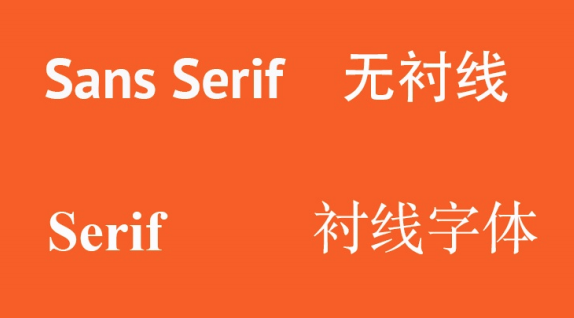

图片居中
有两种方法：
- 第一，图片本身是行级元素（ inline element ）所以可以通过对它的父元素设置
text-align: center;来设置图片居中。
- 第二，甚至是更为长用的一种方法，就是先把图片改变为一个块元素（ block element ） 然后再用
快元素的居中方法来让他居中
img {
display: block;
margin: 0 auto;
}今天制作的页面
里面包含 clearfix border-radius box-shadow 等很多新知识。
http://c.haoduoshipin.com/dcity/1000/day4/
也介绍了 font-family 的使用，以及字体的大概区分。

安装 github 客户端，来操作 gitcafe
这个今天没弄完，所以都挪到下一天的笔记中了。